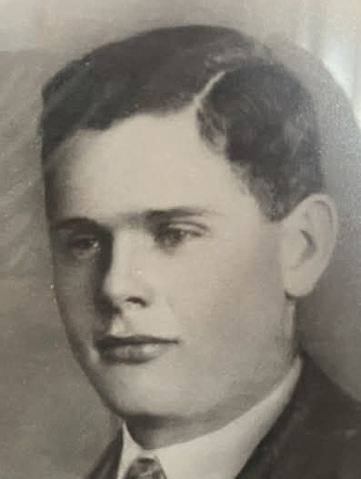

Född 17 jul 1949 i Helga Trefaldighet (C) 1 .
Död 10 jan 1997 på Kronparksvägen 25, Nåntuna, Uppsala, Danmark (C) 2 .

F Gösta Edvin Dolk.Född 14 okt 1909 i Fristad, Skärkind (E) 3 .
Död 27 nov 1998 på Gnejsvägen 20, Eriksberg, Uppsala, Helga Trefaldighet (C) 2 .
Född 10 okt 1884 i Brännebro, Baggetorp, Tjällmo (E) 4 .
Död 16 mar 1970 i Nysätter, Landsjö, Kimstad (E) 2 .
Född 13 jul 1883 i Lättigen, Ekhult (i Björsäter s:n), Örtomta (E) 5 .
Död 28 sep 1932 i Nysätter, Landsjö, Kimstad (E) 6 .
 M
Karin Elisabet Dolk f Nilsson.
M
Karin Elisabet Dolk f Nilsson.
Född 26 mar 1908 i Gäddestad, Östra Husby (E) 7 .
Död 24 okt 1992 på Glimmervägen 5 A, Eriksberg, Uppsala, Helga Trefaldighet (C) 2 .
Född 18 apr 1878 i Kvarnen, Fastebo, Ringarum (E) 8 .
Död 26 mar 1945 i Johannesberg, Österskam, Östra Ny (E) 2 .
Född 26 sep 1876 i Restorpet, Tolsum, Ringarum (E) 9 .
Död 27 feb 1954 i Österskam Östergård, Österskam, Östra Ny (E) 2 .
MMF Karl Johan Andersson.
Född 25 jan 1844 i Misskärr, Mogata (E) 10 .
Död 2 jun 1909 i Norrum, Börrum (E) 11 .
MMM Helena Charlotta Svensdotter.
Född 8 dec 1846 i Snällebo, Sjögerum gästgivaregård, Börrum (E) 12 .
Död 4 maj 1938 i På socknen, Börrum (E) 2 .
 Född
28 maj 1973
i Uppsala, Helga Trefaldighet (C)
Född
28 maj 1973
i Uppsala, Helga Trefaldighet (C)